gdzie \(X_1\) i \(X_2\) są zmiennymi losowymi pochodzącymi z rozkładów zależnych od rozpatrywanej sytuacji (patrz niżej), natomiast \(\epsilon\) jest szumem pochodzącym z rozkładu \(N(0,0.1)\) - jest tak, ponieważ chcemy się skupić wyłącznie na wpływie rozkładu predykatorów. MSE definiujemy następująco:
gdzie \(Y=(Y_1, Y_2, ..., Y_n)\) jest wektorem wartości obserwowanych, natomiast \(\hat{Y}=(Y_1, Y_2, ..., Y_n)\) jest wektorem wartości przewidywanych przez model, a \(n\) oznacza liczbę obserwacji w zbiorze danych. Dla całego projektu przyjmujemy, że \(n = 120\) , co pozwoli nam na bezpośrednie porównywanie uzyskiwanych wyników.
Lista rozpatrywanych przypadków
Poniżej przedstawiono wszystkie przypadki, w których generowane są zmienne losowe \(X_1\) i \(X_2\) . Opisano zarówno przypadki niezależne, jak i zależne, z uwzględnieniem możliwej zależności liniowej, nieliniowej tych zmiennych oraz wpływu zmiennej ukrytej na nie:
a) Zmienne niezależne
double_snorm
W tym przypadku zarówno \(X_1\) , jak i \(X_2\) pochodzą z rozkładu normalnego standaryzowanego: \(X_1\sim \mathcal{N}(0,1), \ X_2 \sim \mathcal{N}(0,1)\)
double_unif_narrow
Zarówno \(X_1\) , jak i \(X_2\) są losowane z wąskiego rozkładu jednostajnego: \(X_1 \sim \mathrm{U}(-3,3), X_2 \sim \mathrm{U}(-3,3)\)
double_unif_wide
W tym przypadku zmienne są losowane z szerszego rozkładu jednostajnego: \(X_1\sim \mathrm{U}(-5,5), X_2 \sim \mathrm{U}(-5,5)\)
norm_exp
Zmienna \(X_1\) ma rozkład normalny z większym odchyleniem standardowym, a \(X_2\) pochodzi z rozkładu wykładniczego: \(X_1 \sim \mathcal{N}(0, 2.9), \quad X_2 \sim \mathrm{Exp}(\lambda = 1.2)\)
snorm_exp
Tutaj \(X_1\) ma rozkład normalny standaryzowany, a \(X_2\) - wykładniczy: \(X_1 \sim \mathcal{N}(0,1), \quad X_2 \sim \mathrm{Exp}(\lambda = 1.2)\)
pois_snorm
Zmienna \(X_1\) jest dyskretna z rozkładu Poisson’a, natomiast \(X_2\) ma rozkład normalny standaryzowany: \(X_1 \sim \mathrm{Pois}(\lambda = 2), \quad X_2 \sim \mathcal{N}(0,1)\)
bimodal_snorm
W tym przypadku \(X_1\) ma rozkład bimodalny, a \(X_2\) - normalny standaryzowany: \(X_1 \sim 0.43\cdot \mathcal{N}(-3,0.8) + 0.57\cdot \mathcal{N}(3,0.8), \quad X_2 \sim \mathcal{N}(0,1)\)
exp_norm
Zmienna \(X_1\) pochodzi z rozkładu wykładniczego, a \(X_2\) z normalnego: \(X_1 \sim \mathrm{Exp}(\lambda = 1.2), \quad X_2 \sim \mathcal{N}(0, 2.9)\)
pois_norm
W tym przypadku \(X_1\) pochodzi z rozkładu Poisson’a, a \(X_2\) z rozkładu normalnego: \(X_1 \sim \mathrm{Pois}(\lambda = 2), \quad X_2 \sim \mathcal{N}(0, 2.9)\)
t_snorm
Zmienna \(X_1\) pochodzi z rozkładu t-Studenta z 3 stopniami swobody, a \(X_2\) z rozkładu normalnego standaryzowanego: \(X_1 \sim t(df=3), \quad X_2 \sim \mathcal{N}(0,1)\)
t_norm
Zmienna \(X_1\) pochodzi z rozkładu t-Studenta, a \(X_2\) z normalnego rozkładu o większej wariancji: \(X_1 \sim t(df=3), \quad X_2 \sim \mathcal{N}(0,2.9)\)
t_exp
Zmienna \(X_1\) pochodzi z rozkładu t-Studenta, natomiast \(X_2\) z rozkładu wykładniczego: \(X_1 \sim t(df=3), \quad X_2 \sim \mathrm{Exp}(\lambda = 1.2)\)
b) Zmienne zależne
i) Zależność liniowa
linear_corr_snorm
Obie zmienne pochodzą z rozkładu normalnego standaryzowanego, ale wprowadzona jest między nimi korelacja \(\rho\) : \((X_1, X_2) \sim \mathcal{N}\Big(\mu =\begin{pmatrix}0\\0\end{pmatrix},\Sigma =\begin{pmatrix}1 & \rho \\ \rho & 1\end{pmatrix}\Big)\)
Taki przypadek pozwala badać wpływ liniowej zależności między predykatorami
ii) Zależność nieliniowa
nonlinear_corr
Zmienna \(X_2\) pochodzi z rozkładu normalnego standaryzowanego. Zmienna \(X_1\) jest nieliniową funkcją zmiennej \(X_2\) z dodatkiem szumu \(\eta\) : \(X_2 \sim \mathcal{N}(0,1), \quad X_1 = a \cdot e^{b X_2} + \eta, \quad \eta \sim \mathcal{N}(0,0.1)\)
Pozwala to na modelowanie przypadków, w których zależność między predykatorami jest wyraźnie nieliniowa
c) Zmienne zależne od zmiennej ukrytej Z
hidden_impact
Tutaj zarówno \(X_1\) , jak i \(X_2\) zależą od wspólnej zmiennej ukrytej \(Z\) : \(X_1 = 2.7 Z + 12, \quad X_2 = 1.4 Z + 15, \quad Z \sim \mathcal{N}(0,1)\)
Taki przypadek umożliwia zbadanie wpływu zmiennej ukrytej na obserwowane zmienne objaśniające
Razem posiadamy 19 przypadków. Dla każdego z nich generować będziemy po 35 ramek danych, co da nam wystarczającą próbkę do porównywania wyników. Dla każdej z utworzonych ramek danych będziemy dopasowywać model regresji nieliniowej, zapiszemy uzyskane wyniki i porównamy je. Tym samym wyciągniemy najciekawsze informacje z wpływu różnych rozkładów predykatorów na wartość błędu średniokwadratowego tworzonej regresji.
1. Generowanie danych
Każda z poniższych funkcji jest wykorzystywana do generowania ramek danych do poszczególnych przypadków opisanych we wprowadzeniu. Działanie każdej funkcji sprawdzamy trzykrotnie, a poniżej każdego fragmentu kodu takiej funkcji zamieszczamy wykresy przedstawiające rozmieszczenie danych na płaszczyźnie z perspektywy prostopadłej . Dodatkowo sprawdzamy rozkład szumu, aby mieć pewność, że nie będzie on miał znaczącego wpływu na predykowaną zmienną Y.
Funkcja do generowania danych
Wprowadzamy funkcję Y_true , która oblicza wartości wektora Y na podstawie wygenerowanych danych. W ten sposób tworzymy “prawdziwe, rzeczywiste” dane.
Następnie definiujemy globalny epsilon oraz eta , aby ustalić deterministyczne ich wartości i aby te wartości nie wpływały mocno na wartość Y, co pozwoli nam na lepsze bezpośrednie porównanie wpływu właśnie rozkładów predykatorów, a nie błędów na wytwarzany MSE.
Do generowania danych do każdego z wymienionych we wstępie przypadków rozkładu dannych zmiennych objaśniających wykorzystujemy funkcję generate_data . Uwzględnia ona wszystkie założenia rozpatrywanych przez nasz w tym projekcie scenariuszy. Generuje odpowiednie dane w zależności od wprowadzonego argumentu case (co tłumaczymy jako ‘przypadek’). Następnie wygenerowane dane są zapisywane do ramki danych, która zawiera 4 kolumny:
X1 - wartości pierwszej zmiennej objaśniającej
X2 - wartości drugiej zmiennej objaśniającej
Y - obliczone na podstawie wzoru (numer wzoru) wartości Y
Eps - biały szum
Funkcja zwraca tę ramkę danych oraz meta dane generatora rozkładu, czyli listę parametrów użytych podczas generowania danych. Parametry te można poznać poniżej. A zatem wynik funkcji generate_data to lista posiadająca dwa elementy:
df - wygenerowana ramka danych zgodnie z wybranym przypadkiem case
meta - meta dane przechowujące wartości parametrów użytych do generowania danych
# wczytanie niezbędnych biblioteklibrary(dplyr)
Attaching package: 'dplyr'
The following objects are masked from 'package:stats':
filter, lag
The following objects are masked from 'package:base':
intersect, setdiff, setequal, union
── Conflicts ────────────────────────────────────────── tidyverse_conflicts() ──
✖ dplyr::filter() masks stats::filter()
✖ dplyr::lag() masks stats::lag()
ℹ Use the conflicted package (<http://conflicted.r-lib.org/>) to force all conflicts to become errors
library(GGally)library(MASS)
Attaching package: 'MASS'
The following object is masked from 'package:dplyr':
select
# Funkcja służąca do obliczenia prawdziwych wartości YY_true <-function(x1, x2, epsilon){return (0.5+x1+0.6*x2*x2+epsilon)}
# Globalna definicja szumuepsilon <-rnorm(120, sd =0.1)# Globalna definicja szumu dla przypadku zmiennej zależnejeta <-rnorm(120, sd =0.1)generate_data <-function(case, n =120, # liczba generowanych obserwacjirho =NULL, # współczynnik korelacji (przypadek zależności liniowej)lambda =2, # lambda dla rozkładu Poisson'aexp_rate =1.2, # intensywność dla rozkładu wykładniczegoa =NULL, # wartość pierwszego współczynnika dla zależności nieliniowejb =NULL# wartość drugiego współczynnika dla zależności nieliniowej ){# sprawdzamy, czy został podany obowiązkowy parametr dla danego przypadku generowania danych needed <-function(param, name){if(is.null(param)){stop(sprintf("Przypadek '%s' wymaga argumentu '%s'", case, name)) } }# przypadek, gdy oba predykatory mają rozkład normalny standaryzowanyif(case=="double_snorm"){ x1 <-rnorm(n) x2 <-rnorm(n)# Zmienne X_1 i X_2 pochodzą z rozkładu jednostajnego o parametrach (-3,3) }elseif(case =="double_unif_narrow"){ x1 <-runif(n, min =-3, max =3) x2 <-runif(n, min =-3, max =3)# Zmienne X_1 i X_2 pochodzą z rozkładu jednostajnego o parametrach (-5,5) }elseif(case =="double_unif_wide"){ x1 <-runif(n, min =-5, max =5) x2 <-runif(n, min =-5, max =5)# Zmienna X_1 pochodzi z rozkładu normalnego z większym odchyleniem standardowym,# natomiast zmienna X_2 pochodzi z rozkładu wykładniczego z lambdą = 1.2 (parametr intensywności) }elseif(case =="norm_exp"){needed(exp_rate,"exp_rate") x1 <-rnorm(n, sd =2.9) x2 <-rexp(n,rate = exp_rate)# Zmienna X_1 pochodzi z rozkładu normalnego standaryzowanego, a zmienna X_2# z rozkładu wykładniczego o lambdzie równej 1.2 }elseif(case =="snorm_exp"){needed(exp_rate,"exp_rate") x1 <-rnorm(n) x2 <-rexp(n, rate = exp_rate)# Zmienna X_1 pochodzi z rozkładu dyskretnego Poisson'a o lambdzie równej ,# Zmienna X_2 pochodzi z rozkładu normalnego standaryzowanego }elseif(case =="pois_snorm"){needed(lambda,"lambda") x1 <-rpois(n,lambda = lambda) x2 <-rnorm(n)# Zmienna X_1 pochodzi z rozkładu bimodalnego, a zmienna X_2 z normalnego# standaryzowanego }elseif(case =="bimodal_snorm"){ bimod_mean1 <--3 bimod_mean2 <-3 bimod_sd <-0.8 p <-0.43 u <-runif(n) x1 <-ifelse(u<p, rnorm(n, bimod_mean1, bimod_sd), rnorm(n,bimod_mean2,bimod_sd)) x2 <-rnorm(n)#Przypadek, gdy zmienna X_1 pochodzi z rozkładu wykładniczego,# a zmienna X_2 z rozkładu normalnego }elseif(case =="exp_norm"){needed(exp_rate,"exp_rate") x1 <-rexp(n, rate = exp_rate) x2 <-rnorm(n, sd =2.9)#Przypadek, gdy X_1 pochodzi z rozkładu Poisson'a, # a X_2 z rozkładu normalnego }elseif(case =="pois_norm"){needed(lambda,"lambda") x1 <-rpois(n, lambda = lambda) x2 <-rnorm(n, sd =2.9)#X_1 pochodzi z rozkładu t-Studenta o trzech stopniach swobody,# a X_2 z rozkładu normalnego standaryzowanego }elseif(case =="t_snorm"){ x1 <-rt(n,df =3) x2 <-rnorm(n)#X_1 pochodzi z rozkładu t-Studenta o trzech stopniach swobody,# a X_2 z rozkładu normalnego }elseif(case =="t_norm"){ x1 <-rt(n, df =3) x2 <-rnorm(n,sd =2.9)#X_1 pochodzi z rozkładu t-Studenta o trzech stopniach swobody,# a X_2 z rozkładu wykładniczego }elseif(case =="t_exp"){needed(exp_rate,"exp_rate") x1 <-rt(n, df =3) x2 <-rexp(n, rate = exp_rate)# Zmienne losowe X_1 i X_2 są liniowo zależne i pochodzą obie # z rozkładu normalnego standaryzowanego }elseif(case =="linear_corr_snorm"){needed(rho,"rho") sigma <-rbind(c(1,rho), c(rho,1)) #macierz kowariancji mu <-c(0,0) #średnie rozkładów# Zmienna X_1 jest nieliniowo zależna od zmiennej X_2# a zmienna X_2 pochodzi z rozkładu normalnego standaryzowanego }elseif(case =="nonlinear_corr"){needed(a,"a")needed(b,"b") x2 <-rnorm(n) x1 <- a*exp(b*x2)+eta }elseif(case =="hidden_impact"){ z <-rnorm(n) x1 <-2.7*z +12 x2 <-1.4*z +15 } meta <-list(case = case, n = n, params =list(rho = rho, lambda = lambda, exp_rate = exp_rate))if(case =="linear_corr_snorm"){ df <-as.data.frame(mvrnorm(n=n, mu=mu, Sigma=sigma)) df <- df %>%mutate(Y=Y_true(V1, V2, epsilon),Eps = epsilon)colnames(df) <-c("X1","X2","Y", "Eps")return(list(df=df,meta=meta)) }elseif(case =="hidden_impact"){ df <-data.frame(X1 = x1, X2 = x2, Y =0.5+x1+0.6*x2*x2+z+epsilon, Eps=epsilon)colnames(df) <-c("X1","X2","Y", "Eps")return(list(df = df, meta = meta, z = z)) } #dodać nonlinear_corr y <-Y_true(x1,x2,epsilon) df <-data.frame(X1 = x1, X2 = x2, Y = y, Eps = epsilon)colnames(df) <-c("X1","X2","Y", "Eps")return(list(df=df,meta=meta))}
Testowanie poprawności generowania zmiennych o określonych rozkładach
Sprawdźmy działanie naszych funkcji na poszczególnych przypadkach:
# sprawdzenie generowania danych dla zmiennych objaśniających pochodzących z rozkładu normalnego standaryzowanegoresults_double_snorm <-list(generate_data(case="double_snorm"),generate_data(case="double_snorm"),generate_data(case="double_snorm"))df1_double_snorm <- results_double_snorm[[1]]$dfdf2_double_snorm <- results_double_snorm[[2]]$dfdf3_double_snorm <- results_double_snorm[[3]]$df ggpairs(df1_double_snorm)
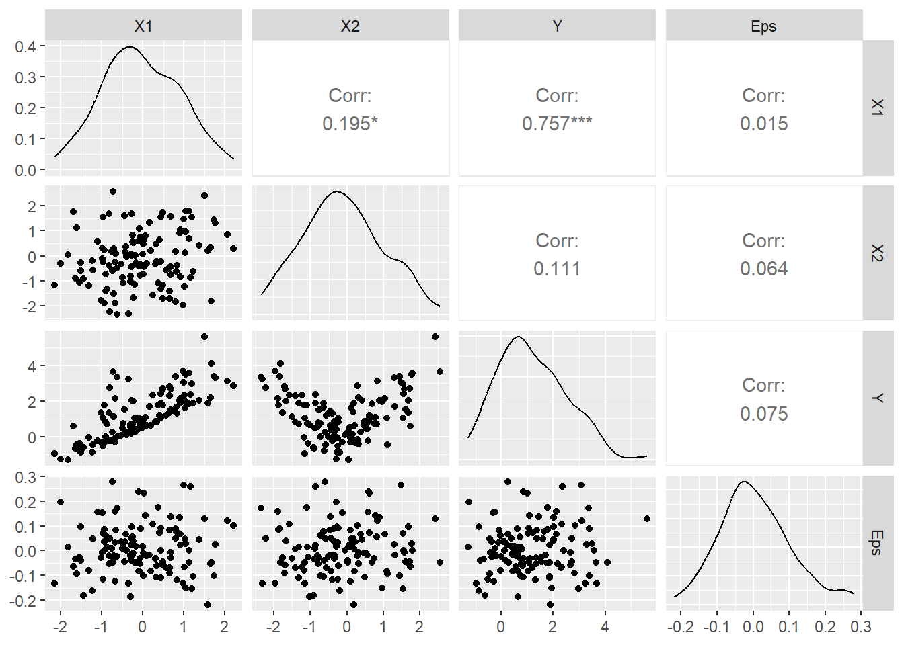
ggpairs(df2_double_snorm)
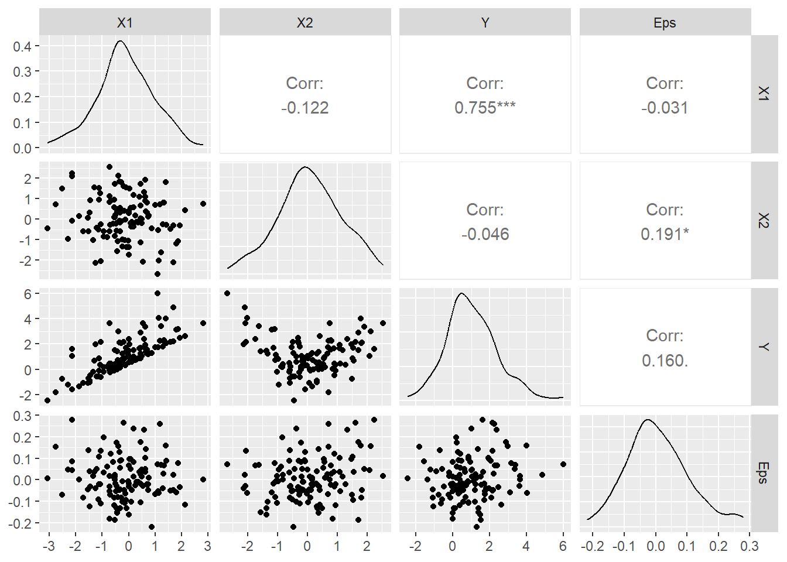
ggpairs(df3_double_snorm)
# sprawdzenie generowania danych dla zmiennych objaśniających pochodzących z rozkładu jednostajnego na odcinku [-3,3]results_unif_narrow <-list(generate_data(case="double_unif_narrow"),generate_data(case="double_unif_narrow"),generate_data(case="double_unif_narrow"))df1_unif_narrow <- results_unif_narrow[[1]]$dfdf2_unif_narrow <- results_unif_narrow[[2]]$dfdf3_unif_narrow <- results_unif_narrow[[3]]$df ggpairs(df1_unif_narrow)
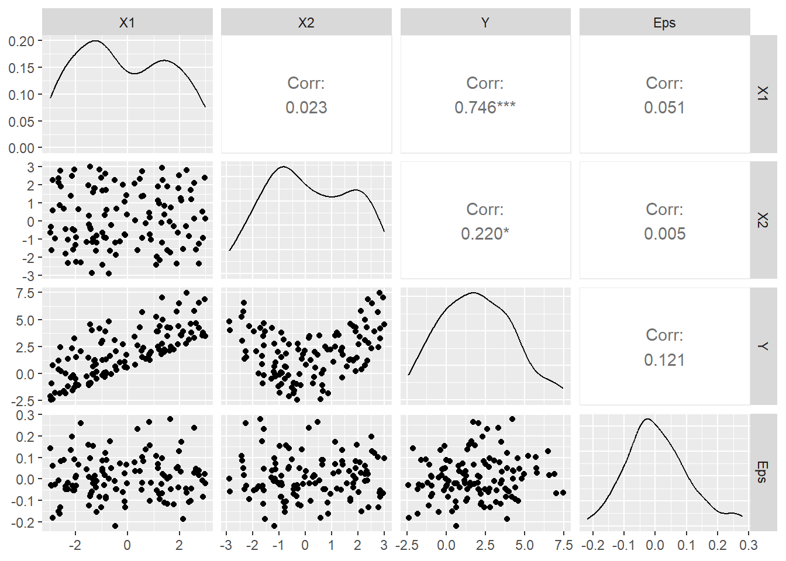
ggpairs(df2_unif_narrow)
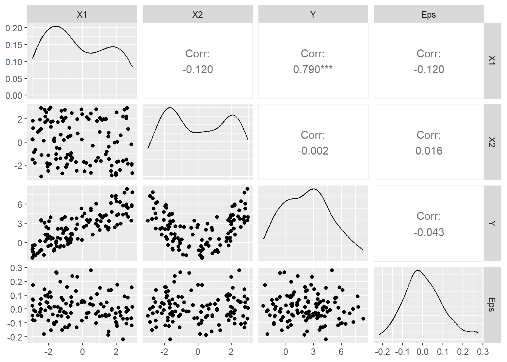
ggpairs(df3_unif_narrow)
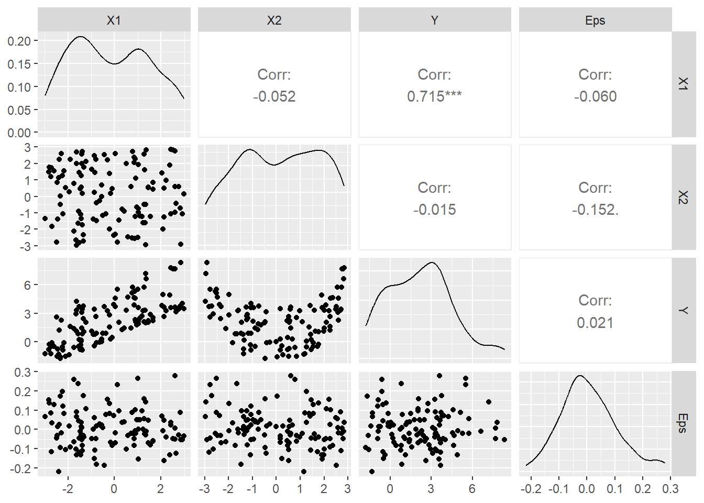
# sprawdzenie generowania danych dla zmiennych objaśniających pochodzących z rozkładu jednostajnego na odcinku [-5,5]results_unif_wide <-list(generate_data(case="double_unif_wide"),generate_data(case="double_unif_wide"),generate_data(case="double_unif_wide"))df1_unif_wide <- results_unif_wide[[1]]$dfdf2_unif_wide <- results_unif_wide[[2]]$dfdf3_unif_wide <- results_unif_wide[[3]]$df ggpairs(df1_unif_wide)
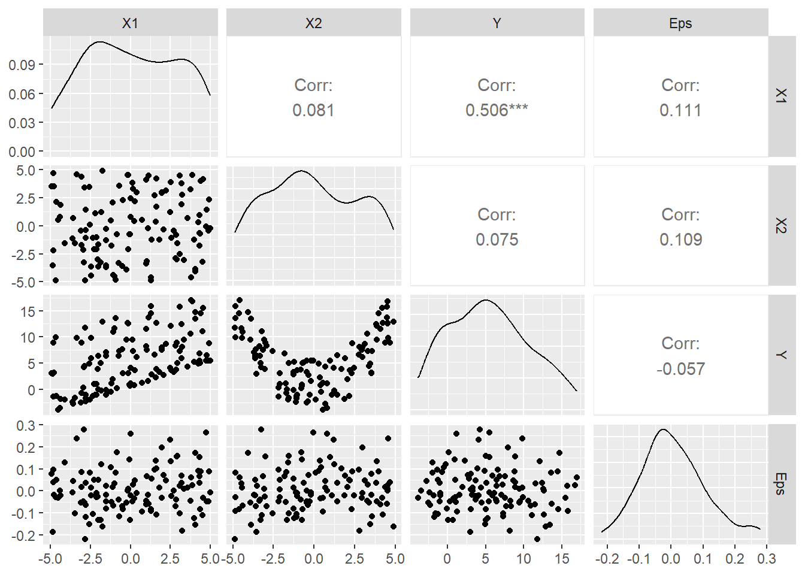
ggpairs(df2_unif_wide)
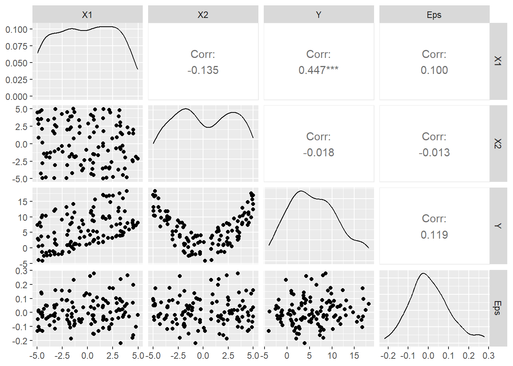
ggpairs(df3_unif_wide)
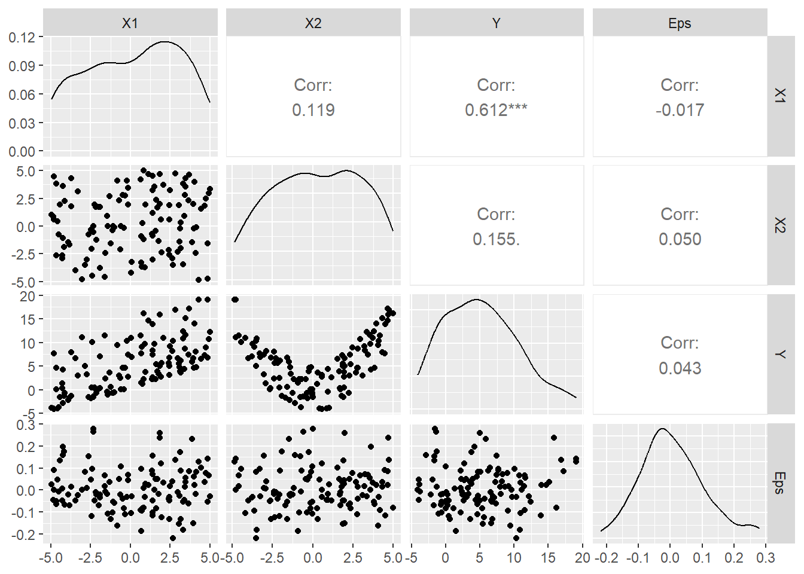
# sprawdzenie generowania danych dla zmiennych X_1 i X_2 pochodzących z rozkładu #normalnego o średniej 0 i odchyleniu standardowym 2.9 oraz rozkładu wykładniczego# o parametrze lambda = 1.2results_norm_exp <-list(generate_data(case="norm_exp"),generate_data(case="norm_exp"),generate_data(case="norm_exp"))df1_norm_exp <- results_norm_exp[[1]]$dfdf2_norm_exp <- results_norm_exp[[2]]$dfdf3_norm_exp <- results_norm_exp[[3]]$df ggpairs(df1_norm_exp)
ggpairs(df2_norm_exp)
ggpairs(df3_norm_exp)
# sprawdzenie generowania danych dla zmiennych X_1 i X_2 pochodzących z rozkładu #normalnego standaryzowanego oraz rozkładu wykładniczego# o parametrze lambda = 1.2 odpowiednioresults_snorm_exp <-list(generate_data(case="snorm_exp"),generate_data(case="snorm_exp"),generate_data(case="snorm_exp"))df1_snorm_exp <- results_snorm_exp[[1]]$dfdf2_snorm_exp <- results_snorm_exp[[2]]$dfdf3_snorm_exp <- results_snorm_exp[[3]]$df ggpairs(df1_snorm_exp)
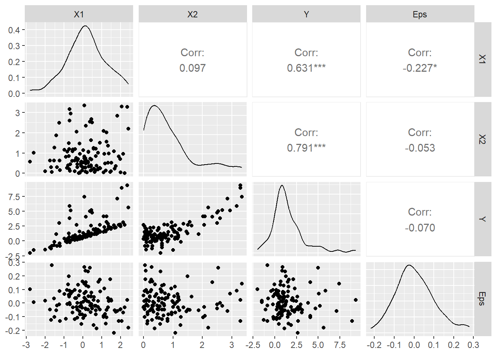
ggpairs(df2_snorm_exp)
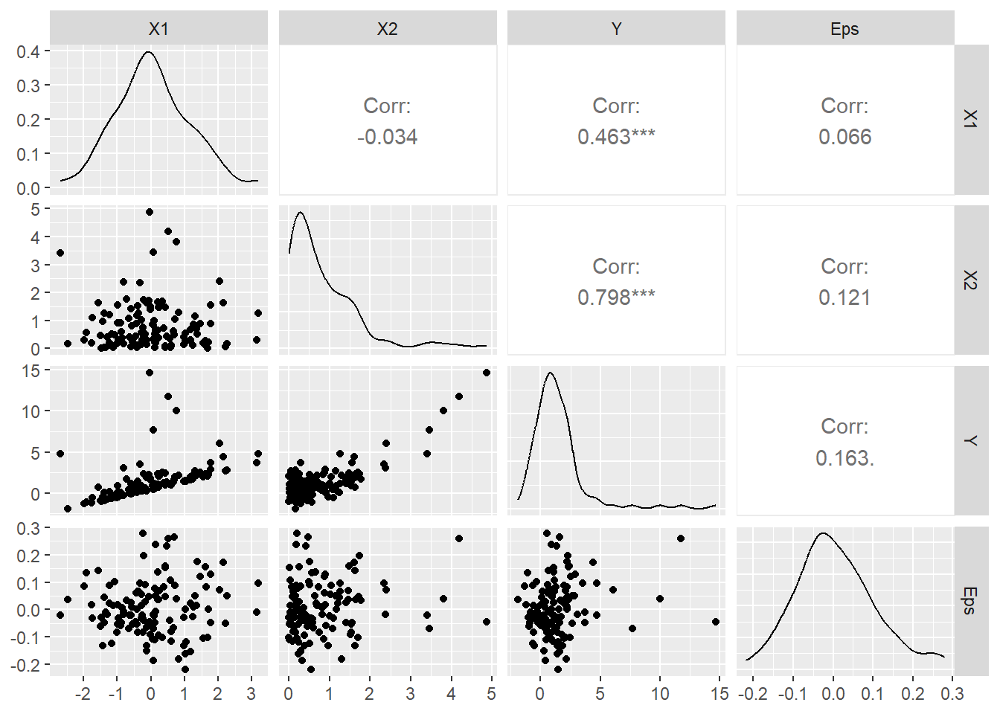
ggpairs(df3_snorm_exp)
# sprawdzenie generowania danych dla zmiennych X_1 i X_2 pochodzących z rozkładu Poisson'a o lambdzie równej 2 oraz z rozkładu #normalnego standaryzowanego odpowiednioresults_pois_snorm <-list(generate_data(case="pois_snorm"),generate_data(case="pois_snorm"),generate_data(case="pois_snorm"))df1_pois_snorm<- results_pois_snorm[[1]]$dfdf2_pois_snorm <- results_pois_snorm[[2]]$dfdf3_pois_snorm <- results_pois_snorm[[3]]$df#INNY WYKRES
# sprawdzenie generowania danych dla zmiennych X_1 i X_2, gdy pierwsza pochodzi z rozkładu bimodalnego# a druga z rozkładu normalnego standaryzowanegoresults_bimodal_snorm <-list(generate_data(case="bimodal_snorm"),generate_data(case="bimodal_snorm"),generate_data(case="bimodal_snorm"))df1_bimodal_snorm <- results_bimodal_snorm[[1]]$dfdf2_bimodal_snorm <- results_bimodal_snorm[[2]]$dfdf3_bimodal_snorm <- results_bimodal_snorm[[3]]$df ggpairs(df1_bimodal_snorm)
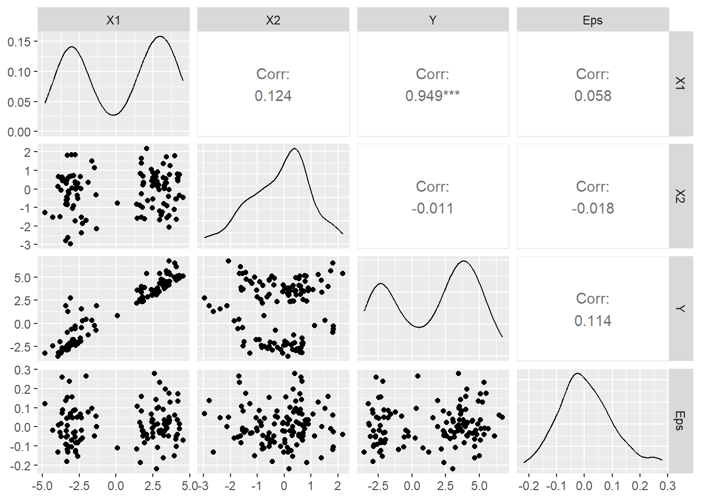
ggpairs(df2_bimodal_snorm)
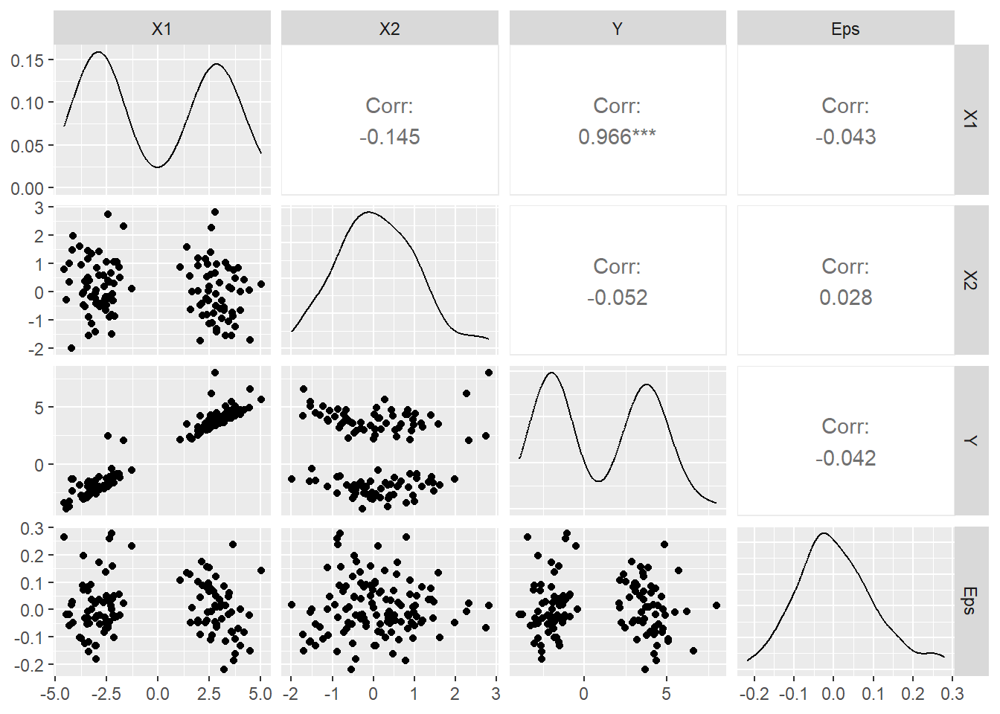
ggpairs(df3_bimodal_snorm)
# sprawdzenie generowania danych dla zmiennych X_1 i X_2, gdy pierwsza pochodzi z rozkładu wykładniczego,# a druga z rozkładu normalnegoresults_exp_norm <-list(generate_data(case="exp_norm"),generate_data(case="exp_norm"),generate_data(case="exp_norm"))df1_exp_norm <- results_exp_norm[[1]]$dfdf2_exp_norm <- results_exp_norm[[2]]$dfdf3_exp_norm <- results_exp_norm[[3]]$df ggpairs(df1_exp_norm)
ggpairs(df2_exp_norm)
ggpairs(df3_exp_norm)
# sprawdzenie generowania danych dla zmiennych X_1 i X_2 pochodzących z rozkładu Poisson'a o lambdzie równej 2 oraz z rozkładu #normalnego odpowiednioresults_pois_norm <-list(generate_data(case="pois_norm"),generate_data(case="pois_norm"),generate_data(case="pois_norm"))df1_pois_norm<- results_pois_norm[[1]]$dfdf2_pois_norm <- results_pois_norm[[2]]$dfdf3_pois_norm <- results_pois_norm[[3]]$df
# sprawdzenie generowania danych dla zmiennych X_1 i X_2, gdy pierwsza pochodzi z rozkładu t-Studenta o trzech stopniach swobody,# a druga z rozkładu normalnego standaryzowanegoresults_t_snorm <-list(generate_data(case="t_snorm"),generate_data(case="t_snorm"),generate_data(case="t_snorm"))df1_t_snorm <- results_t_snorm[[1]]$dfdf2_t_snorm <- results_t_snorm[[2]]$dfdf3_t_snorm <- results_t_snorm[[3]]$df ggpairs(df1_t_snorm)
ggpairs(df2_t_snorm)
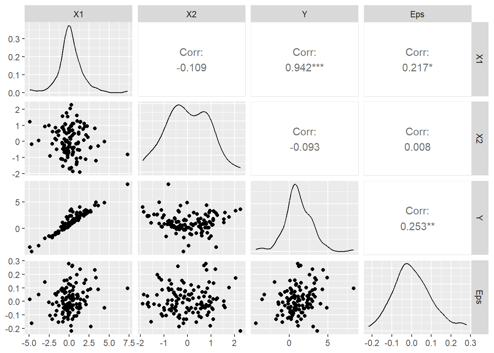
ggpairs(df3_t_snorm)
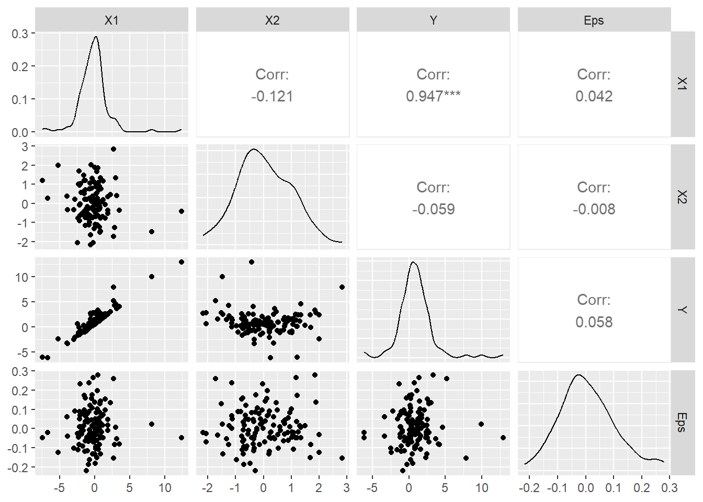
# sprawdzenie generowania danych dla zmiennych X_1 i X_2, gdy pierwsza pochodzi z rozkładu t-Studenta o trzech stopniach swobody,# a druga z rozkładu normalnego results_t_norm <-list(generate_data(case="t_norm"),generate_data(case="t_norm"),generate_data(case="t_norm"))df1_t_norm <- results_t_norm[[1]]$dfdf2_t_norm <- results_t_norm[[2]]$dfdf3_t_norm <- results_t_norm[[3]]$df ggpairs(df1_t_norm)
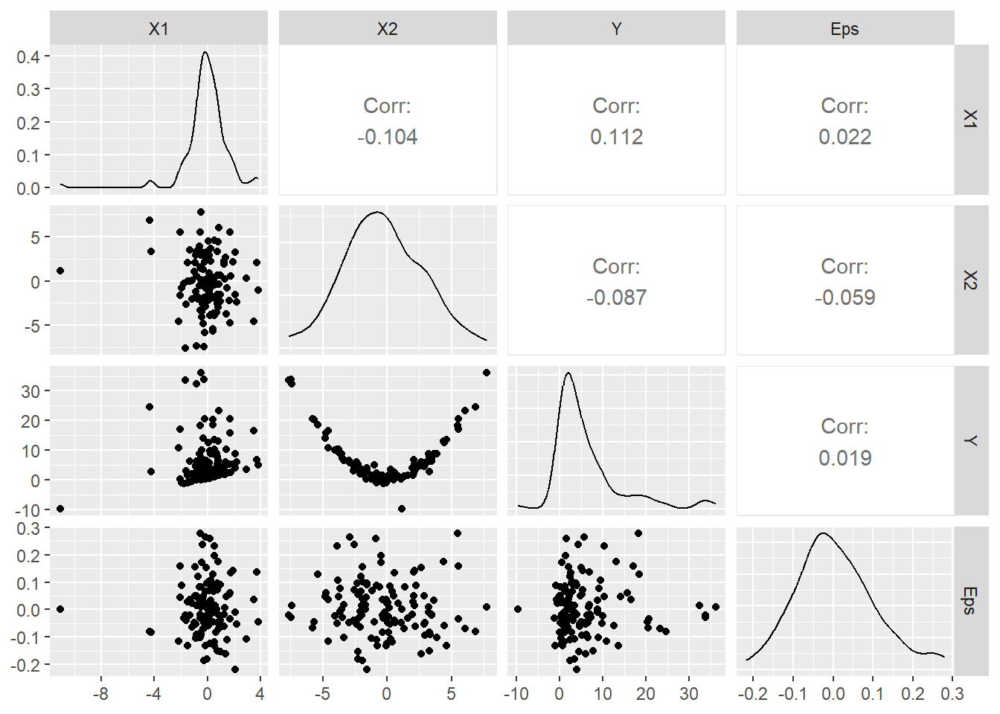
ggpairs(df2_t_norm)
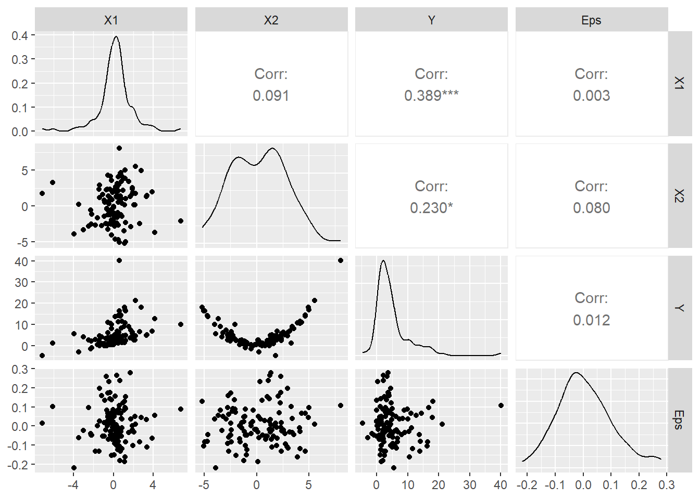
ggpairs(df3_t_norm)
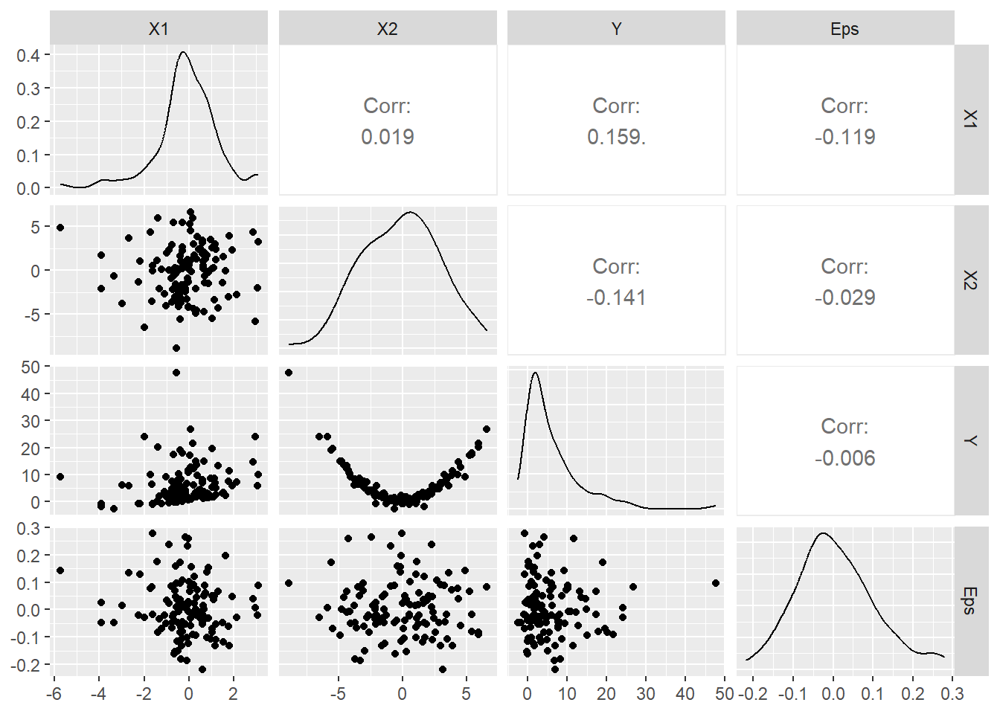
# sprawdzenie generowania danych dla zmiennych X_1 i X_2, gdy pierwsza pochodzi z rozkładu t-Studenta o trzech stopniach swobody,# a druga z rozkładu wykładniczego results_t_exp <-list(generate_data(case="t_exp"),generate_data(case="t_exp"),generate_data(case="t_exp"))df1_t_exp <- results_t_exp[[1]]$dfdf2_t_exp <- results_t_exp[[2]]$dfdf3_t_exp <- results_t_exp[[3]]$df ggpairs(df1_t_exp)
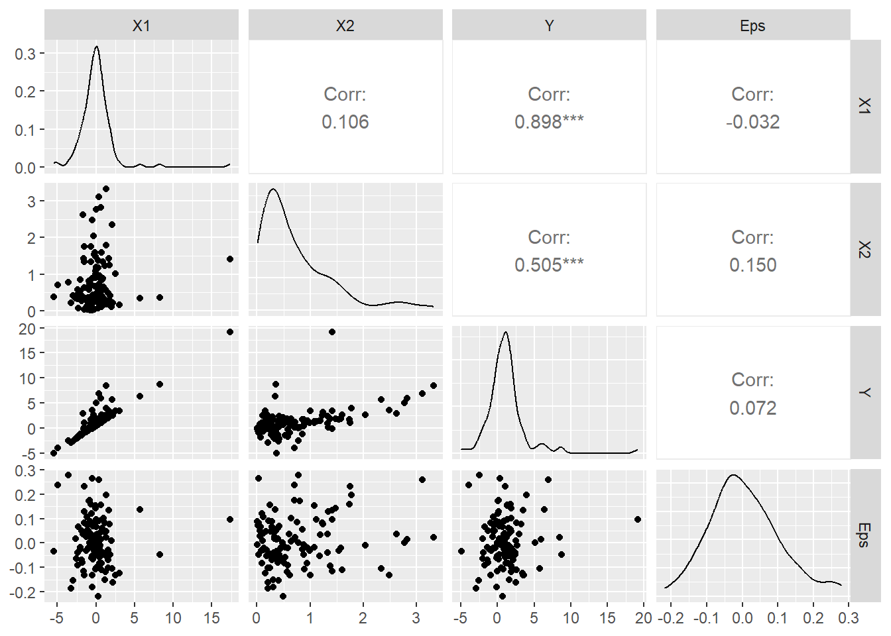
ggpairs(df2_t_exp)
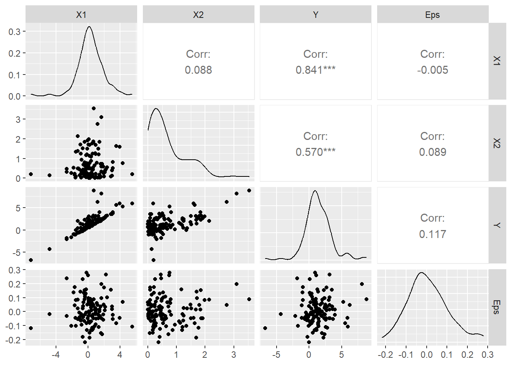
ggpairs(df3_t_exp)
# sprawdzenie generowania danych dla zmiennych X_1 i X_2, gdy są one liniowo zależne #i obie pochodzą z rozkładu normalnego standaryzowanegoresults_linear_corr <-list(generate_data(case="linear_corr_snorm", rho =0.8),generate_data(case="linear_corr_snorm", rho =0.8),generate_data(case="linear_corr_snorm", rho =0.8))df1_linear_corr <- results_linear_corr[[1]]$dfdf2_linear_corr <- results_linear_corr[[2]]$dfdf3_linear_corr <- results_linear_corr[[3]]$df ggpairs(df1_linear_corr)
*Ewentualnie mogę zamienić te wykresy na takie, a Dominika może wykorzystać te ggpairs już przy rozpisywaniu konkretnych modeli (wg mnie trzeba tak zrobić i lepiej żebym te wykresy jak ten poniżej dodała w swojej części, a Dominika już ma gotowca do podejrzenia danych w swojej częśći ;) )
library(tidyr)library(ggplot2)# Połączenie danych w jedną ramkędf_all_bimodal <-bind_rows( df1_bimodal_snorm %>%mutate(run ="run1"), df2_bimodal_snorm %>%mutate(run ="run2"), df3_bimodal_snorm %>%mutate(run ="run3"))# Zmiana formatu na long, żeby łatwiej rysowaćdf_long_bimodal <- df_all_bimodal %>%pivot_longer(cols =c(X1, X2),names_to ="zmienna",values_to ="wartość")# Gęstości dla obu zmiennych i trzech powtórzeńggplot(df_long_bimodal, aes(x = wartość, col=run)) +geom_density(alpha =0.3) +facet_wrap(~ zmienna, scales ="free") +labs(title ="Rozkłady X1 (bimodalny) i X2 (standaryzowany normalny)",x ="Wartość", y ="Gęstość") +theme_minimal()
Krótka charakterystyka generowanych danych
Poniższa tabela zawiera empiryczne informacje co do wygenerowanych ramek danych. Pozwala to na porównanie poprawności otrzymywanych rozkładów.
# każdy wektor parametrów wygenerowanych rozkładów zawiera po kolei:# wartość empirycznej średniej zmiennej X1# wartość empirycznej wariancji zmiennej X1# wartość empirycznej średniej zmiennej X2# wartość empirycznej wariancji zmiennej X2# wartość współczynnika korelacji pomiędzy tymi zmiennymi double_snorm_param1 <-c(sum(df1_double_snorm$X1)/length(df1_double_snorm$X1),var(df1_double_snorm$X1),sum(df1_double_snorm$X2)/length(df1_double_snorm$X2),var(df1_double_snorm$X2),cor(df1_double_snorm$X1,df1_double_snorm$X2))double_snorm_param2 <-c(sum(df2_double_snorm$X1)/length(df2_double_snorm$X1),var(df2_double_snorm$X1),sum(df2_double_snorm$X2)/length(df2_double_snorm$X2),var(df2_double_snorm$X2),cor(df2_double_snorm$X1,df2_double_snorm$X2))double_snorm_param3 <-c(sum(df3_double_snorm$X1)/length(df3_double_snorm$X1),var(df3_double_snorm$X1),sum(df3_double_snorm$X2)/length(df3_double_snorm$X2),var(df3_double_snorm$X2),cor(df3_double_snorm$X1,df3_double_snorm$X2))double_unif_narrow1 <-c(sum(df1_unif_narrow$X1)/length(df1_unif_narrow$X1),var(df1_unif_narrow$X1),sum(df1_unif_narrow$X2)/length(df1_unif_narrow$X2),var(df1_unif_narrow$X2),cor(df1_unif_narrow$X1,df1_unif_narrow$X2))double_unif_narrow2 <-c(sum(df2_unif_narrow$X1)/length(df2_unif_narrow$X1),var(df2_unif_narrow$X1),sum(df2_unif_narrow$X2)/length(df2_unif_narrow$X2),var(df2_unif_narrow$X2),cor(df2_unif_narrow$X1,df2_unif_narrow$X2))double_unif_narrow3 <-c(sum(df3_unif_narrow$X1)/length(df3_unif_narrow$X1),var(df3_unif_narrow$X1),sum(df3_unif_narrow$X2)/length(df3_unif_narrow$X2),var(df3_unif_narrow$X2),cor(df3_unif_narrow$X1,df3_unif_narrow$X2))double_unif_wide1 <-c(sum(df1_unif_wide$X1)/length(df1_unif_wide$X1),var(df1_unif_wide$X1),sum(df1_unif_wide$X2)/length(df1_unif_wide$X2),var(df1_unif_wide$X2),cor(df1_unif_wide$X1,df1_unif_wide$X2))double_unif_wide2 <-c(sum(df2_unif_wide$X1)/length(df2_unif_wide$X1),var(df2_unif_wide$X1),sum(df2_unif_wide$X2)/length(df2_unif_wide$X2),var(df2_unif_wide$X2),cor(df2_unif_wide$X1,df2_unif_wide$X2))double_unif_wide3 <-c(sum(df3_unif_wide$X1)/length(df3_unif_wide$X1),var(df3_unif_wide$X1),sum(df3_unif_wide$X2)/length(df3_unif_wide$X2),var(df3_unif_wide$X2),cor(df3_unif_wide$X1,df3_unif_wide$X2))norm_exp1 <-c(sum(df1_norm_exp$X1)/length(df1_norm_exp$X1),var(df1_norm_exp$X1),sum(df1_norm_exp$X2)/length(df1_norm_exp$X2),var(df1_norm_exp$X2),cor(df1_norm_exp$X1,df1_norm_exp$X2))norm_exp2 <-c(sum(df2_norm_exp$X1)/length(df2_norm_exp$X1),var(df2_norm_exp$X1),sum(df2_norm_exp$X2)/length(df2_norm_exp$X2),var(df2_norm_exp$X2),cor(df2_norm_exp$X1,df2_norm_exp$X2))norm_exp3 <-c(sum(df3_norm_exp$X1)/length(df3_norm_exp$X1),var(df3_norm_exp$X1),sum(df3_norm_exp$X2)/length(df3_norm_exp$X2),var(df3_norm_exp$X2),cor(df3_norm_exp$X1,df3_norm_exp$X2))snorm_exp1 <-c(sum(df1_snorm_exp$X1)/length(df1_snorm_exp$X1),var(df1_snorm_exp$X1),sum(df1_snorm_exp$X2)/length(df1_snorm_exp$X2),var(df1_snorm_exp$X2),cor(df1_snorm_exp$X1,df1_snorm_exp$X2))snorm_exp2 <-c(sum(df2_snorm_exp$X1)/length(df2_snorm_exp$X1),var(df2_snorm_exp$X1),sum(df2_snorm_exp$X2)/length(df2_snorm_exp$X2),var(df2_snorm_exp$X2),cor(df2_snorm_exp$X1,df2_snorm_exp$X2))snorm_exp3 <-c(sum(df3_snorm_exp$X1)/length(df3_snorm_exp$X1),var(df3_snorm_exp$X1),sum(df3_snorm_exp$X2)/length(df3_snorm_exp$X2),var(df3_snorm_exp$X2),cor(df3_snorm_exp$X1,df3_snorm_exp$X2))pois_snorm1 <-c(sum(df1_pois_snorm$X1)/length(df1_pois_snorm$X1),var(df1_pois_snorm$X1),sum(df1_pois_snorm$X2)/length(df1_pois_snorm$X2),var(df1_pois_snorm$X2),cor(df1_pois_snorm$X1,df1_pois_snorm$X2))pois_snorm2 <-c(sum(df2_pois_snorm$X1)/length(df2_pois_snorm$X1),var(df2_pois_snorm$X1),sum(df2_pois_snorm$X2)/length(df2_pois_snorm$X2),var(df2_pois_snorm$X2),cor(df2_pois_snorm$X1,df2_pois_snorm$X2))pois_snorm3 <-c(sum(df3_pois_snorm$X1)/length(df3_pois_snorm$X1),var(df3_pois_snorm$X1),sum(df3_pois_snorm$X2)/length(df3_pois_snorm$X2),var(df3_pois_snorm$X2),cor(df3_pois_snorm$X1,df3_pois_snorm$X2))bimodal_snorm1 <-c(sum(df1_bimodal_snorm$X1)/length(df1_bimodal_snorm$X1),var(df1_bimodal_snorm$X1),sum(df1_bimodal_snorm$X2)/length(df1_bimodal_snorm$X2),var(df1_bimodal_snorm$X2),cor(df1_bimodal_snorm$X1,df1_bimodal_snorm$X2))bimodal_snorm2 <-c(sum(df2_bimodal_snorm$X1)/length(df2_bimodal_snorm$X1),var(df2_bimodal_snorm$X1),sum(df2_bimodal_snorm$X2)/length(df2_bimodal_snorm$X2),var(df2_bimodal_snorm$X2),cor(df2_bimodal_snorm$X1,df2_bimodal_snorm$X2))bimodal_snorm3 <-c(sum(df3_bimodal_snorm$X1)/length(df3_bimodal_snorm$X1),var(df3_bimodal_snorm$X1),sum(df3_bimodal_snorm$X2)/length(df3_bimodal_snorm$X2),var(df3_bimodal_snorm$X2),cor(df3_bimodal_snorm$X1,df3_bimodal_snorm$X2))exp_norm1 <-c(sum(df1_exp_norm$X1)/length(df1_exp_norm$X1),var(df1_exp_norm$X1),sum(df1_exp_norm$X2)/length(df1_exp_norm$X2),var(df1_exp_norm$X2),cor(df1_exp_norm$X1,df1_exp_norm$X2))exp_norm2 <-c(sum(df2_exp_norm$X1)/length(df2_exp_norm$X1),var(df2_exp_norm$X1),sum(df2_exp_norm$X2)/length(df2_exp_norm$X2),var(df2_exp_norm$X2),cor(df2_exp_norm$X1,df2_exp_norm$X2))exp_norm3 <-c(sum(df3_exp_norm$X1)/length(df3_exp_norm$X1),var(df3_exp_norm$X1),sum(df3_exp_norm$X2)/length(df3_exp_norm$X2),var(df3_exp_norm$X2),cor(df3_exp_norm$X1,df3_exp_norm$X2))pois_norm1 <-c(sum(df1_pois_norm$X1)/length(df1_pois_norm$X1),var(df1_pois_norm$X1),sum(df1_pois_norm$X2)/length(df1_pois_norm$X2),var(df1_pois_norm$X2),cor(df1_pois_norm$X1,df1_pois_norm$X2))pois_norm2 <-c(sum(df2_pois_norm$X1)/length(df2_pois_norm$X1),var(df2_pois_norm$X1),sum(df2_pois_norm$X2)/length(df2_pois_norm$X2),var(df2_pois_norm$X2),cor(df2_pois_norm$X1,df2_pois_norm$X2))pois_norm3 <-c(sum(df3_pois_norm$X1)/length(df3_pois_norm$X1),var(df3_pois_norm$X1),sum(df3_pois_norm$X2)/length(df3_pois_norm$X2),var(df3_pois_norm$X2),cor(df3_pois_norm$X1,df3_pois_norm$X2))t_snorm1 <-c(sum(df1_t_snorm$X1)/length(df1_t_snorm$X1),var(df1_t_snorm$X1),sum(df1_t_snorm$X2)/length(df1_t_snorm$X2),var(df1_t_snorm$X2),cor(df1_t_snorm$X1,df1_t_snorm$X2))t_snorm2 <-c(sum(df2_t_snorm$X1)/length(df2_t_snorm$X1),var(df2_t_snorm$X1),sum(df2_t_snorm$X2)/length(df2_t_snorm$X2),var(df2_t_snorm$X2),cor(df2_t_snorm$X1,df2_t_snorm$X2))t_snorm3 <-c(sum(df3_t_snorm$X1)/length(df3_t_snorm$X1),var(df3_t_snorm$X1),sum(df3_t_snorm$X2)/length(df3_t_snorm$X2),var(df3_t_snorm$X2),cor(df3_t_snorm$X1,df3_t_snorm$X2))t_norm1 <-c(sum(df1_t_norm$X1)/length(df1_t_norm$X1),var(df1_t_norm$X1),sum(df1_t_norm$X2)/length(df1_t_norm$X2),var(df1_t_norm$X2),cor(df1_t_norm$X1,df1_t_norm$X2))t_norm2 <-c(sum(df2_t_norm$X1)/length(df2_t_norm$X1),var(df2_t_norm$X1),sum(df2_t_norm$X2)/length(df2_t_norm$X2),var(df2_t_norm$X2),cor(df2_t_norm$X1,df2_t_norm$X2))t_norm3 <-c(sum(df3_t_norm$X1)/length(df3_t_norm$X1),var(df3_t_norm$X1),sum(df3_t_norm$X2)/length(df3_t_norm$X2),var(df3_t_norm$X2),cor(df3_t_norm$X1,df3_t_norm$X2))t_exp1 <-c(sum(df1_t_exp$X1)/length(df1_t_exp$X1),var(df1_t_exp$X1),sum(df1_t_exp$X2)/length(df1_t_exp$X2),var(df1_t_exp$X2),cor(df1_t_exp$X1,df1_t_exp$X2))t_exp2 <-c(sum(df2_t_exp$X1)/length(df2_t_exp$X1),var(df2_t_exp$X1),sum(df2_t_exp$X2)/length(df2_t_exp$X2),var(df2_t_exp$X2),cor(df2_t_exp$X1,df2_t_exp$X2))t_exp3 <-c(sum(df3_t_exp$X1)/length(df3_t_exp$X1),var(df3_t_exp$X1),sum(df3_t_exp$X2)/length(df3_t_exp$X2),var(df3_t_exp$X2),cor(df3_t_exp$X1,df3_t_exp$X2))linear_corr1 <-c(sum(df1_linear_corr$X1)/length(df1_linear_corr$X1),var(df1_linear_corr$X1),sum(df1_linear_corr$X2)/length(df1_linear_corr$X2),var(df1_linear_corr$X2),cor(df1_linear_corr$X1,df1_linear_corr$X2))linear_corr2 <-c(sum(df2_linear_corr$X1)/length(df2_linear_corr$X1),var(df2_linear_corr$X1),sum(df2_linear_corr$X2)/length(df2_linear_corr$X2),var(df2_linear_corr$X2),cor(df2_linear_corr$X1,df2_linear_corr$X2))linear_corr3 <-c(sum(df3_linear_corr$X1)/length(df3_linear_corr$X1),var(df3_linear_corr$X1),sum(df3_linear_corr$X2)/length(df3_linear_corr$X2),var(df3_linear_corr$X2),cor(df3_linear_corr$X1,df3_linear_corr$X2))nonlinear_corr1 <-c(sum(df1_nonlinear_corr$X1)/length(df1_nonlinear_corr$X1),var(df1_nonlinear_corr$X1),sum(df1_nonlinear_corr$X2)/length(df1_nonlinear_corr$X2),var(df1_nonlinear_corr$X2),cor(df1_nonlinear_corr$X1,df1_nonlinear_corr$X2))nonlinear_corr2 <-c(sum(df2_nonlinear_corr$X1)/length(df2_nonlinear_corr$X1),var(df2_nonlinear_corr$X1),sum(df2_nonlinear_corr$X2)/length(df2_nonlinear_corr$X2),var(df2_nonlinear_corr$X2),cor(df2_nonlinear_corr$X1,df2_nonlinear_corr$X2))nonlinear_corr3 <-c(sum(df3_nonlinear_corr$X1)/length(df3_nonlinear_corr$X1),var(df3_nonlinear_corr$X1),sum(df3_nonlinear_corr$X2)/length(df3_nonlinear_corr$X2),var(df3_nonlinear_corr$X2),cor(df3_nonlinear_corr$X1,df3_nonlinear_corr$X2))hidden_impact1 <-c(sum(df1_hidden_impact$X1)/length(df1_hidden_impact$X1),var(df1_hidden_impact$X1),sum(df1_hidden_impact$X2)/length(df1_hidden_impact$X2),var(df1_hidden_impact$X2),cor(df1_hidden_impact$X1,df1_hidden_impact$X2))hidden_impact2 <-c(sum(df2_hidden_impact$X1)/length(df2_hidden_impact$X1),var(df2_hidden_impact$X1),sum(df2_hidden_impact$X2)/length(df2_hidden_impact$X2),var(df2_hidden_impact$X2),cor(df2_hidden_impact$X1,df2_hidden_impact$X2))hidden_impact3 <-c(sum(df3_hidden_impact$X1)/length(df3_hidden_impact$X1),var(df3_hidden_impact$X1),sum(df3_hidden_impact$X2)/length(df3_hidden_impact$X2),var(df3_hidden_impact$X2),cor(df3_hidden_impact$X1,df3_hidden_impact$X2))
library(knitr)library(kableExtra)
Attaching package: 'kableExtra'
The following object is masked from 'package:dplyr':
group_rows
kable(dist_param, caption ="Empiryczne parametry zmiennych X1 i X2 dla wszystkich rozkładów i powtórzeń") %>%kable_styling(full_width =FALSE, bootstrap_options =c("striped", "hover", "condensed")) %>%row_spec(seq(0, nrow(dist_param), by =3), extra_css ="border-bottom: 2px solid black;")
Empiryczne parametry zmiennych X1 i X2 dla wszystkich rozkładów i powtórzeń
dist
run
mean_X1
var_X1
mean_X2
var_X2
cor_X1_X2
double_snorm
1
0.1001
0.9800
0.0897
0.8032
0.1960
double_snorm
2
-0.0615
0.9121
-0.0724
0.9359
-0.2029
double_snorm
3
0.0788
1.0213
0.0062
1.0653
-0.0868
double_unif_narrow
1
-0.0371
2.8734
0.3568
3.0310
0.0431
double_unif_narrow
2
-0.0615
3.1323
-0.0296
2.8411
0.0391
double_unif_narrow
3
-0.2813
3.0142
-0.1559
3.5301
0.0881
double_unif_wide
1
0.1395
8.4655
0.2063
9.1890
0.0539
double_unif_wide
2
-0.1971
8.1972
-0.3156
9.0769
0.1117
double_unif_wide
3
-0.3892
7.1937
0.5621
6.5176
-0.0219
norm_exp
1
-0.1290
8.8166
0.8534
0.6260
0.2743
norm_exp
2
-0.0628
9.3186
0.8735
0.7449
0.1228
norm_exp
3
-0.2157
9.1218
0.5763
0.3013
-0.0181
snorm_exp
1
0.0666
0.9288
0.7750
0.4922
-0.1134
snorm_exp
2
0.0126
0.8853
0.6741
0.6018
-0.0811
snorm_exp
3
-0.0637
0.8564
0.8621
0.7027
0.0114
pois_snorm
1
2.0750
1.8179
0.0515
0.9680
0.0249
pois_snorm
2
2.1083
2.2319
-0.0493
0.8722
0.1211
pois_snorm
3
2.0917
2.2016
-0.1272
1.1442
-0.0107
bimodal_snorm
1
0.1707
9.4047
-0.0879
1.0145
0.0812
bimodal_snorm
2
0.7954
9.3043
-0.0219
0.8418
0.0601
bimodal_snorm
3
0.7697
9.3659
-0.0042
1.0445
0.1162
exp_norm
1
0.8806
0.8108
0.0680
7.8631
-0.0598
exp_norm
2
0.8258
0.6182
-0.0287
9.4072
-0.0237
exp_norm
3
0.8993
1.0430
0.1367
8.0211
0.0703
pois_norm
1
2.0667
2.2644
-0.1267
7.8236
-0.0147
pois_norm
2
2.2917
2.6957
-0.0252
7.1714
-0.1031
pois_norm
3
2.1000
1.9395
-0.0376
9.6957
-0.0485
t_snorm
1
-0.0652
1.9893
-0.0051
1.0847
-0.0099
t_snorm
2
-0.1940
2.8879
0.0570
1.0415
0.0723
t_snorm
3
-0.0430
1.5932
0.0419
0.7436
0.0354
t_norm
1
0.2693
2.6364
-0.0649
7.5132
-0.0660
t_norm
2
-0.1237
3.8487
-0.0499
7.6574
-0.1217
t_norm
3
0.1141
2.4241
0.1640
6.2468
-0.0310
t_exp
1
0.0180
2.6561
0.8213
0.5514
0.1522
t_exp
2
0.1778
3.9898
0.7962
0.6982
-0.0384
t_exp
3
-0.0664
1.7800
0.8680
0.7314
0.0135
linear_corr
1
0.0692
0.9760
0.0770
0.8973
0.7944
linear_corr
2
-0.0338
1.2368
-0.0193
1.2210
0.8484
linear_corr
3
0.0359
0.8518
0.1008
0.9652
0.7937
nonlinear_corr
1
1.8575
6.6826
-0.0966
0.8303
0.7413
nonlinear_corr
2
2.9511
36.1651
-0.0477
1.1066
0.6752
nonlinear_corr
3
4.1872
142.6512
0.0977
1.0972
0.5834
hidden_impact
1
11.7572
9.4221
14.8741
2.5333
1.0000
hidden_impact
2
11.7794
7.4575
14.8856
2.0050
1.0000
hidden_impact
3
11.8675
7.2818
14.9313
1.9578
1.0000
To daje nam praktyczny wgląd na sposób generowania danych przez dedykowaną funkcję. Widzimy, że rozkłady się zgadzają z założeniami, a tworzone ramki danych są miarodajne. Możemy zatem przejść do dalszych badań.
PAMIĘTAJCIE O USTALENIU SEEDU DLA KAŻDEJ ITERACJI< ABY MOŻNA BYŁO DOKŁADNIE KAŻDĄ ITERACJĘ POWTÓRZYĆ!!!